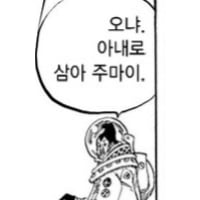

ai라는 제작자의 친절한 힌트

실제 배우 맞는데 가슴 모양이 원래 저랬었나 가슴만 왜 또 ai 같지
ai잖아
누구였지
amira west?
amber 뭐였다
amber ajami 뭐 이런느낌이었는디
East아니었나?
ㅅㅂ 이걸 왜 찾아봤지
대유쾌마운틴이 온다
amber ajami 인데 원래도 몸매 뒤지는데 ai로 과하게 키운듯??
과해?
난 ai처리한게 딱인데
원본은 부족함
검색해봤는데 별룬데...위에껀 진짜 ai로 수정한거

선글라스 벗었는데 또 선글라스가 있네 ㅋㅋㅋㅋㅋ
선글라스 벗었는데 왜 또 나와 ㅋㅋㅋㅋ
기초적인 임플란트다
변검술ㄷㄷ
앰버 아자자잣
진짜라고 최면 걸고 살고있음
거기에 뭐 나있어서 좀 그래
심지어 다 보여줌 ㅋㅋ
어흐~
선글라스 개웃기네 ㅋㅋㅋㅋㅋㅋㅋㅋㅋㅋㅋㅋㅋㅋㅋㅋ
개그튼련 가끔 신세진다
ㅋㅋㅋㅋㅋ
선글라스는 왜 두개냐고 ㅋㅋ